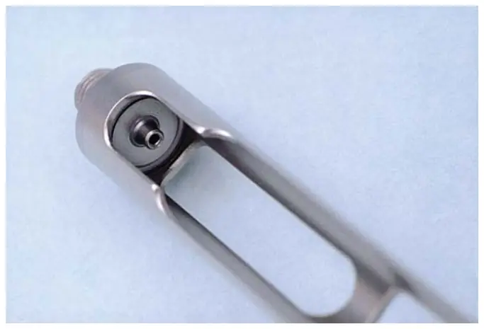
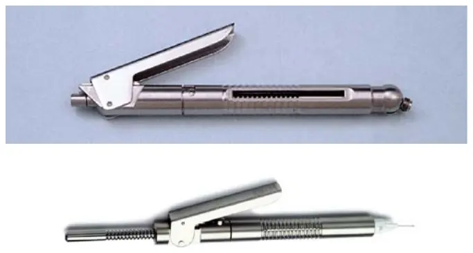

نسخه استخراجشده؛ ترجمه یا تأیید علمی انجام نشده است. وضعیت: captured
همکاری با دست کوچک میگوید در IANB نمیتواند با سرنگ هارپوندار حلقهی شست را بیلرزش عقب بکشد و برای همین گاهی آسپیراسیون را کنار میگذارد. کدام سرنگ به کارش میآید؟

آسپیراسیون باید عمدی انجام شود، ولی در عمل زیاد نادیده گرفته میشود: فقط ۶۳٫۲٪ دندانپزشکان پیش از IANB همیشه آسپیره میکنند و پیش از اینفیلتراسیون فک بالا ۴۰٫۲٪. آسپیراسیون مثبت در IANB تا ۱۰ تا ۱۵٪ میرسد. سرنگ خودآسپیرهکننده برای آسان کردن همین کار ساخته شد.
هارپونی در کار نیست؛ خاصیت ارتجاعی دیافراگم آسپیراسیون را انجام میدهد. پس در طول تزریق بهآسانی چند بار آسپیره میکنی.
نکتهی طلایی: سرنگ خودآسپیرهکننده بیشتر وقتها به خوبی سرنگ هارپوندار خون را آسپیره کرده، ولی شواهد هنوز قطعی نیست.
